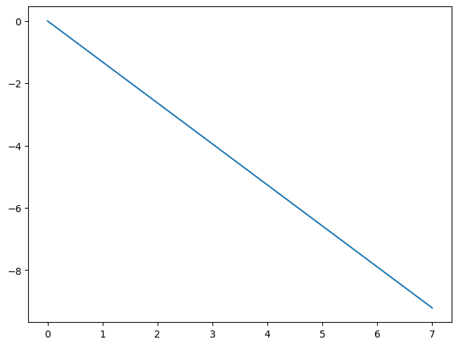
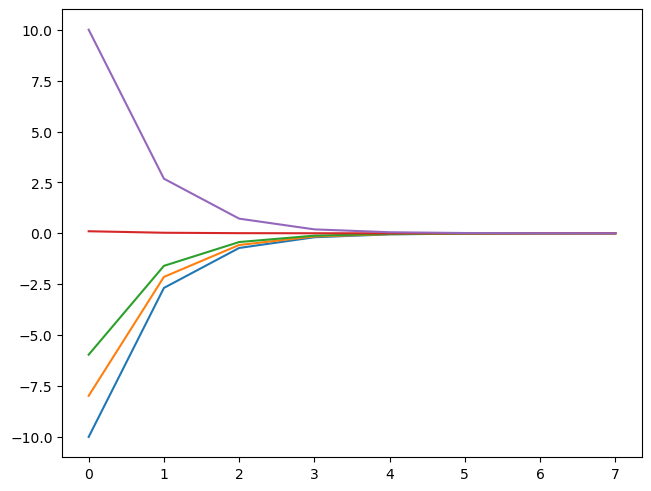
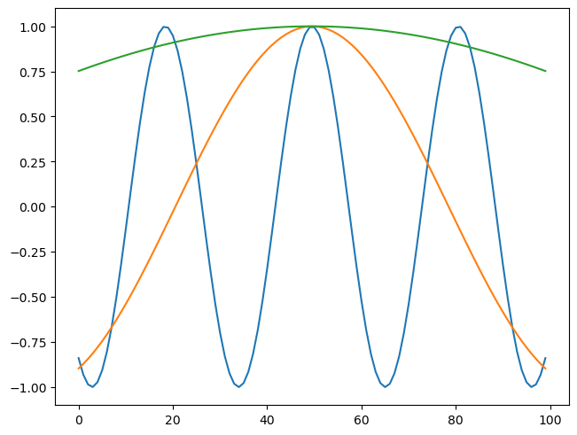
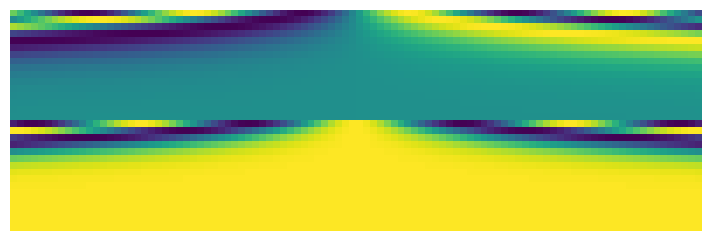
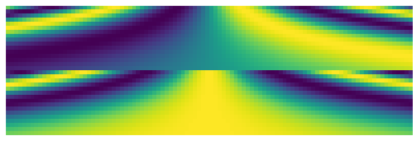
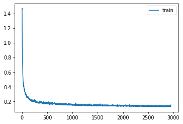

import os
# os.environ['CUDA_VISIBLE_DEVICES']='1'Diffusion unet
import timm, torch, random, datasets, math, fastcore.all as fc, numpy as np, matplotlib as mpl, matplotlib.pyplot as plt
import k_diffusion as K, torchvision.transforms as T
import torchvision.transforms.functional as TF,torch.nn.functional as F
from torch.utils.data import DataLoader,default_collate
from pathlib import Path
from torch.nn import init
from fastcore.foundation import L
from torch import nn,tensor
from datasets import load_dataset
from operator import itemgetter
from torcheval.metrics import MulticlassAccuracy
from functools import partial
from torch.optim import lr_scheduler
from torch import optim
from fastAIcourse.datasets import *
from fastAIcourse.conv import *
from fastAIcourse.learner import *
from fastAIcourse.activations import *
from fastAIcourse.init import *
from fastAIcourse.sgd import *
from fastAIcourse.resnet import *
from fastAIcourse.augment import *
from fastAIcourse.accel import *
from fastAIcourse.training import *from fastprogress import progress_bar
from diffusers import UNet2DModel, DDIMPipeline, DDPMPipeline, DDIMScheduler, DDPMSchedulertorch.set_printoptions(precision=5, linewidth=140, sci_mode=False)
torch.manual_seed(1)
mpl.rcParams['image.cmap'] = 'gray_r'
mpl.rcParams['figure.dpi'] = 70
import logging
logging.disable(logging.WARNING)
set_seed(42)
if fc.defaults.cpus>8: fc.defaults.cpus=8xl,yl = 'image','label'
name = "fashion_mnist"
n_steps = 1000
bs = 512
dsd = load_dataset(name)sig_data = 0.66@inplace
def transformi(b): b[xl] = [F.pad(TF.to_tensor(o), (2,2,2,2))*2-1 for o in b[xl]]
def scalings(sig):
totvar = sig**2+sig_data**2
# c_skip,c_out,c_in
return sig_data**2/totvar,sig*sig_data/totvar.sqrt(),1/totvar.sqrt()
def noisify(x0):
device = x0.device
sig = (torch.randn([len(x0)])*1.2-1.2).exp().to(x0).reshape(-1,1,1,1)
noise = torch.randn_like(x0, device=device)
c_skip,c_out,c_in = scalings(sig)
noised_input = x0 + noise*sig
target = (x0-c_skip*noised_input)/c_out
return (noised_input*c_in,sig.squeeze()),target
def collate_ddpm(b): return noisify(default_collate(b)[xl])
def dl_ddpm(ds): return DataLoader(ds, batch_size=bs, collate_fn=collate_ddpm, num_workers=0)tds = dsd.with_transform(transformi)
dls = DataLoaders(dl_ddpm(tds['train']), dl_ddpm(tds['test']))Train
Based on Diffusers
def unet_conv(ni, nf, ks=3, stride=1, act=nn.SiLU, norm=None, bias=True):
layers = nn.Sequential()
if norm: layers.append(norm(ni))
if act : layers.append(act())
layers.append(nn.Conv2d(ni, nf, stride=stride, kernel_size=ks, padding=ks//2, bias=bias))
return layersclass UnetResBlock(nn.Module):
def __init__(self, ni, nf=None, ks=3, act=nn.SiLU, norm=nn.BatchNorm2d):
super().__init__()
if nf is None: nf = ni
self.convs = nn.Sequential(unet_conv(ni, nf, ks, act=act, norm=norm),
unet_conv(nf, nf, ks, act=act, norm=norm))
self.idconv = fc.noop if ni==nf else nn.Conv2d(ni, nf, 1)
def forward(self, x): return self.convs(x) + self.idconv(x)class A:
def __call__(self):
super().__call__()
print('a')
class B:
def __call__(self): print('b')
class C(A,B): passC()()b
aclass SaveModule:
def forward(self, x, *args, **kwargs):
self.saved = super().forward(x, *args, **kwargs)
return self.saved
class SavedResBlock(SaveModule, UnetResBlock): pass
class SavedConv(SaveModule, nn.Conv2d): passdef down_block(ni, nf, add_down=True, num_layers=1):
res = nn.Sequential(*[SavedResBlock(ni=ni if i==0 else nf, nf=nf)
for i in range(num_layers)])
if add_down: res.append(SavedConv(nf, nf, 3, stride=2, padding=1))
return resdef upsample(nf): return nn.Sequential(nn.Upsample(scale_factor=2.), nn.Conv2d(nf, nf, 3, padding=1))class UpBlock(nn.Module):
def __init__(self, ni, prev_nf, nf, add_up=True, num_layers=2):
super().__init__()
self.resnets = nn.ModuleList(
[UnetResBlock((prev_nf if i==0 else nf)+(ni if (i==num_layers-1) else nf), nf)
for i in range(num_layers)])
self.up = upsample(nf) if add_up else nn.Identity()
def forward(self, x, ups):
for resnet in self.resnets: x = resnet(torch.cat([x, ups.pop()], dim=1))
return self.up(x)class UNet2DModel(nn.Module):
def __init__( self, in_channels=3, out_channels=3, nfs=(224,448,672,896), num_layers=1):
super().__init__()
self.conv_in = nn.Conv2d(in_channels, nfs[0], kernel_size=3, padding=1)
nf = nfs[0]
self.downs = nn.Sequential()
for i in range(len(nfs)):
ni = nf
nf = nfs[i]
self.downs.append(down_block(ni, nf, add_down=i!=len(nfs)-1, num_layers=num_layers))
self.mid_block = UnetResBlock(nfs[-1])
rev_nfs = list(reversed(nfs))
nf = rev_nfs[0]
self.ups = nn.ModuleList()
for i in range(len(nfs)):
prev_nf = nf
nf = rev_nfs[i]
ni = rev_nfs[min(i+1, len(nfs)-1)]
self.ups.append(UpBlock(ni, prev_nf, nf, add_up=i!=len(nfs)-1, num_layers=num_layers+1))
self.conv_out = unet_conv(nfs[0], out_channels, act=nn.SiLU, norm=nn.BatchNorm2d)
def forward(self, inp):
x = self.conv_in(inp[0])
saved = [x]
x = self.downs(x)
saved += [p.saved for o in self.downs for p in o]
x = self.mid_block(x)
for block in self.ups: x = block(x, saved)
return self.conv_out(x)model = UNet2DModel(in_channels=1, out_channels=1, nfs=(32,64,128,256), num_layers=2)lr = 3e-3
epochs = 25
opt_func = partial(optim.Adam, eps=1e-5)
tmax = epochs * len(dls.train)
sched = partial(lr_scheduler.OneCycleLR, max_lr=lr, total_steps=tmax)
cbs = [DeviceCB(), MixedPrecision(), ProgressCB(plot=True), MetricsCB(), BatchSchedCB(sched)]
learn = Learner(model, dls, nn.MSELoss(), lr=lr, cbs=cbs, opt_func=opt_func)learn.fit(epochs)Timesteps
emb_dim = 16
tsteps = torch.linspace(-10,10,100)
max_period = 10000math.log(10000)9.210340371976184exponent = -math.log(max_period) * torch.linspace(0, 1, emb_dim//2, device=tsteps.device)plt.plot(exponent);
emb = tsteps[:,None].float() * exponent.exp()[None,:]
emb.shapetorch.Size([100, 8])plt.plot(emb[0])
plt.plot(emb[10])
plt.plot(emb[20])
plt.plot(emb[50])
plt.plot(emb[-1]);
emb = torch.cat([torch.sin(emb), torch.cos(emb)], dim=-1)
emb.shapetorch.Size([100, 16])plt.plot(emb[:,0])
plt.plot(emb[:,1])
plt.plot(emb[:,2])
plt.plot(emb[:,3])
plt.plot(emb[:,4]);
plt.plot(emb[:,8])
plt.plot(emb[:,9])
plt.plot(emb[:,10]);
show_image(emb.T, figsize=(7,7));
def timestep_embedding(tsteps, emb_dim, max_period= 10000):
exponent = -math.log(max_period) * torch.linspace(0, 1, emb_dim//2, device=tsteps.device)
emb = tsteps[:,None].float() * exponent.exp()[None,:]
emb = torch.cat([emb.sin(), emb.cos()], dim=-1)
return F.pad(emb, (0,1,0,0)) if emb_dim%2==1 else embshow_image(timestep_embedding(tsteps, 32, max_period=1000).T, figsize=(7,7));
show_image(timestep_embedding(tsteps, 32, max_period=10).T, figsize=(7,7));
Timestep model
from functools import wrapsdef lin(ni, nf, act=nn.SiLU, norm=None, bias=True):
layers = nn.Sequential()
if norm: layers.append(norm(ni))
if act : layers.append(act())
layers.append(nn.Linear(ni, nf, bias=bias))
return layersclass EmbResBlock(nn.Module):
def __init__(self, n_emb, ni, nf=None, ks=3, act=nn.SiLU, norm=nn.BatchNorm2d):
super().__init__()
if nf is None: nf = ni
self.emb_proj = nn.Linear(n_emb, nf*2)
self.conv1 = unet_conv(ni, nf, ks, act=act, norm=norm) #, bias=not norm)
self.conv2 = unet_conv(nf, nf, ks, act=act, norm=norm)
self.idconv = fc.noop if ni==nf else nn.Conv2d(ni, nf, 1)
def forward(self, x, t):
inp = x
x = self.conv1(x)
emb = self.emb_proj(F.silu(t))[:, :, None, None]
scale,shift = torch.chunk(emb, 2, dim=1)
x = x*(1+scale) + shift
x = self.conv2(x)
return x + self.idconv(inp)def saved(m, blk):
m_ = m.forward
@wraps(m.forward)
def _f(*args, **kwargs):
res = m_(*args, **kwargs)
blk.saved.append(res)
return res
m.forward = _f
return mclass DownBlock(nn.Module):
def __init__(self, n_emb, ni, nf, add_down=True, num_layers=1):
super().__init__()
self.resnets = nn.ModuleList([saved(EmbResBlock(n_emb, ni if i==0 else nf, nf), self)
for i in range(num_layers)])
self.down = saved(nn.Conv2d(nf, nf, 3, stride=2, padding=1), self) if add_down else nn.Identity()
def forward(self, x, t):
self.saved = []
for resnet in self.resnets: x = resnet(x, t)
x = self.down(x)
return xclass UpBlock(nn.Module):
def __init__(self, n_emb, ni, prev_nf, nf, add_up=True, num_layers=2):
super().__init__()
self.resnets = nn.ModuleList(
[EmbResBlock(n_emb, (prev_nf if i==0 else nf)+(ni if (i==num_layers-1) else nf), nf)
for i in range(num_layers)])
self.up = upsample(nf) if add_up else nn.Identity()
def forward(self, x, t, ups):
for resnet in self.resnets: x = resnet(torch.cat([x, ups.pop()], dim=1), t)
return self.up(x)class EmbUNetModel(nn.Module):
def __init__( self, in_channels=3, out_channels=3, nfs=(224,448,672,896), num_layers=1):
super().__init__()
self.conv_in = nn.Conv2d(in_channels, nfs[0], kernel_size=3, padding=1)
self.n_temb = nf = nfs[0]
n_emb = nf*4
# TODO: remove act func from 1st MLP layer
self.emb_mlp = nn.Sequential(lin(self.n_temb, n_emb, norm=nn.BatchNorm1d),
lin(n_emb, n_emb))
self.downs = nn.ModuleList()
for i in range(len(nfs)):
ni = nf
nf = nfs[i]
self.downs.append(DownBlock(n_emb, ni, nf, add_down=i!=len(nfs)-1, num_layers=num_layers))
self.mid_block = EmbResBlock(n_emb, nfs[-1])
rev_nfs = list(reversed(nfs))
nf = rev_nfs[0]
self.ups = nn.ModuleList()
for i in range(len(nfs)):
prev_nf = nf
nf = rev_nfs[i]
ni = rev_nfs[min(i+1, len(nfs)-1)]
self.ups.append(UpBlock(n_emb, ni, prev_nf, nf, add_up=i!=len(nfs)-1, num_layers=num_layers+1))
self.conv_out = unet_conv(nfs[0], out_channels, act=nn.SiLU, norm=nn.BatchNorm2d, bias=False)
def forward(self, inp):
x,t = inp
temb = timestep_embedding(t, self.n_temb)
emb = self.emb_mlp(temb)
x = self.conv_in(x)
saved = [x]
for block in self.downs: x = block(x, emb)
saved += [p for o in self.downs for p in o.saved]
x = self.mid_block(x, emb)
for block in self.ups: x = block(x, emb, saved)
return self.conv_out(x)model = EmbUNetModel(in_channels=1, out_channels=1, nfs=(32,64,128,256), num_layers=2)lr = 1e-2
epochs = 25
opt_func = partial(optim.Adam, eps=1e-5)
tmax = epochs * len(dls.train)
sched = partial(lr_scheduler.OneCycleLR, max_lr=lr, total_steps=tmax)
cbs = [DeviceCB(), ProgressCB(plot=True), MetricsCB(), BatchSchedCB(sched), MixedPrecision()]
model = EmbUNetModel(in_channels=1, out_channels=1, nfs=(32,64,128,256), num_layers=2)
learn = Learner(model, dls, nn.MSELoss(), lr=lr, cbs=cbs, opt_func=opt_func)learn.fit(epochs)| loss | epoch | train |
|---|---|---|
| 0.409 | 0 | train |
| 0.304 | 0 | eval |
| 0.221 | 1 | train |
| 0.338 | 1 | eval |
| 0.193 | 2 | train |
| 0.215 | 2 | eval |
| 0.182 | 3 | train |
| 0.219 | 3 | eval |
| 0.175 | 4 | train |
| 0.201 | 4 | eval |
| 0.169 | 5 | train |
| 0.206 | 5 | eval |
| 0.165 | 6 | train |
| 0.240 | 6 | eval |
| 0.162 | 7 | train |
| 0.180 | 7 | eval |
| 0.157 | 8 | train |
| 0.186 | 8 | eval |
| 0.155 | 9 | train |
| 0.222 | 9 | eval |
| 0.153 | 10 | train |
| 0.190 | 10 | eval |
| 0.151 | 11 | train |
| 0.164 | 11 | eval |
| 0.149 | 12 | train |
| 0.186 | 12 | eval |
| 0.148 | 13 | train |
| 0.158 | 13 | eval |
| 0.146 | 14 | train |
| 0.146 | 14 | eval |
| 0.145 | 15 | train |
| 0.152 | 15 | eval |
| 0.143 | 16 | train |
| 0.148 | 16 | eval |
| 0.143 | 17 | train |
| 0.142 | 17 | eval |
| 0.142 | 18 | train |
| 0.142 | 18 | eval |
| 0.140 | 19 | train |
| 0.140 | 19 | eval |
| 0.139 | 20 | train |
| 0.138 | 20 | eval |
| 0.139 | 21 | train |
| 0.139 | 21 | eval |
| 0.137 | 22 | train |
| 0.139 | 22 | eval |
| 0.137 | 23 | train |
| 0.138 | 23 | eval |
| 0.138 | 24 | train |
| 0.137 | 24 | eval |

Sampling
from miniai.fid import ImageEvalcmodel = torch.load('models/data_aug2.pkl')
del(cmodel[8])
del(cmodel[7])
bs = 2048
tds2 = dsd.with_transform(transformi)
dls2 = DataLoaders.from_dd(tds, bs, num_workers=fc.defaults.cpus)
dt = dls2.train
xb,yb = next(iter(dt))
ie = ImageEval(cmodel, dls2, cbs=[DeviceCB()])sz = (512,1,32,32)sz = (2048,1,32,32)def sigmas_karras(n, sigma_min=0.01, sigma_max=80., rho=7.):
ramp = torch.linspace(0, 1, n)
min_inv_rho = sigma_min**(1/rho)
max_inv_rho = sigma_max**(1/rho)
sigmas = (max_inv_rho + ramp * (min_inv_rho-max_inv_rho))**rho
return torch.cat([sigmas, tensor([0.])]).cuda()
def denoise(model, x, sig):
sig = sig[None] #* torch.ones((len(x),1), device=x.device)
c_skip,c_out,c_in = scalings(sig)
return model((x*c_in, sig))*c_out + x*c_skipdef get_ancestral_step(sigma_from, sigma_to, eta=1.):
if not eta: return sigma_to, 0.
var_to,var_from = sigma_to**2,sigma_from**2
sigma_up = min(sigma_to, eta * (var_to * (var_from-var_to)/var_from)**0.5)
return (var_to-sigma_up**2)**0.5, sigma_up
@torch.no_grad()
def sample_euler_ancestral(x, sigs, i, model, eta=1.):
sig,sig2 = sigs[i],sigs[i+1]
denoised = denoise(model, x, sig)
sigma_down,sigma_up = get_ancestral_step(sig, sig2, eta=eta)
x = x + (x-denoised)/sig*(sigma_down-sig)
return x + torch.randn_like(x)*sigma_up@torch.no_grad()
def sample_euler(x, sigs, i, model):
sig,sig2 = sigs[i],sigs[i+1]
denoised = denoise(model, x, sig)
return x + (x-denoised)/sig*(sig2-sig)
@torch.no_grad()
def sample_heun(x, sigs, i, model, s_churn=0., s_tmin=0., s_tmax=float('inf'), s_noise=1.):
sig,sig2 = sigs[i],sigs[i+1]
n = len(sigs)
gamma = min(s_churn/(n-1), 2**0.5-1) if s_tmin<=sig<=s_tmax else 0.
eps = torch.randn_like(x) * s_noise
sigma_hat = sig * (gamma+1)
if gamma > 0: x = x + eps * (sigma_hat**2-sig**2)**0.5
denoised = denoise(model, x, sig)
d = (x-denoised)/sig
dt = sig2-sigma_hat
x_2 = x + d*dt
if sig2==0: return x_2
denoised_2 = denoise(model, x_2, sig2)
d_2 = (x_2-denoised_2)/sig2
d_prime = (d+d_2)/2
return x + d_prime*dtdef sample(sampler, model, steps=100, sigma_max=80., **kwargs):
preds = []
x = torch.randn(sz).cuda()*sigma_max
sigs = sigmas_karras(steps, sigma_max=sigma_max)
for i in progress_bar(range(len(sigs)-1)):
x = sampler(x, sigs, i, model, **kwargs)
preds.append(x)
return predspreds = sample_lms(model, steps=20, order=3)
# preds = sample(sample_euler_ancestral, model, steps=100, eta=1.)
# preds = sample(sample_euler, model, steps=100)
# preds = sample(sample_heun, model, steps=20, s_churn=0.5)
100.00% [20/20 00:04<00:00]
s = preds[-1]
s.min(),s.max()(tensor(-1.09312, device='cuda:0'), tensor(1.43464, device='cuda:0'))show_images(s[:25].clamp(-1,1), imsize=1.5)# lms 20
ie.fid(s),ie.kid(s),s.shape(6.195896366748002, 0.011938275769352913, torch.Size([2048, 1, 32, 32]))preds = sample_lms(model, steps=20, order=3)
s = preds[-1]
ie.fid(s),ie.kid(s),s.shape
100.00% [20/20 00:04<00:00]
(4.967668251150826, 0.01714729703962803, torch.Size([2048, 1, 32, 32]))preds = sample_lms(model, steps=20, order=3)
s = preds[-1]
ie.fid(s),ie.kid(s),s.shape
100.00% [20/20 00:04<00:00]
(4.607266664456915, 0.0245591439306736, torch.Size([2048, 1, 32, 32]))from scipy import integratedef linear_multistep_coeff(order, t, i, j):
if order-1 > i: raise ValueError(f'Order {order} too high for step {i}')
def fn(tau):
prod = 1.
for k in range(order):
if j == k: continue
prod *= (tau-t[i-k]) / (t[i-j]-t[i-k])
return prod
return integrate.quad(fn, t[i], t[i+1], epsrel=1e-4)[0]
@torch.no_grad()
def sample_lms(model, steps=100, order=4, sigma_max=80.):
preds = []
x = torch.randn(sz).cuda()*sigma_max
sigs = sigmas_karras(steps, sigma_max=sigma_max)
ds = []
for i in progress_bar(range(len(sigs)-1)):
sig = sigs[i]
denoised = denoise(model, x, sig)
d = (x-denoised)/sig
ds.append(d)
if len(ds) > order: ds.pop(0)
cur_order = min(i+1, order)
coeffs = [linear_multistep_coeff(cur_order, sigs, i, j) for j in range(cur_order)]
x = x + sum(coeff*d for coeff, d in zip(coeffs, reversed(ds)))
preds.append(x)
return preds